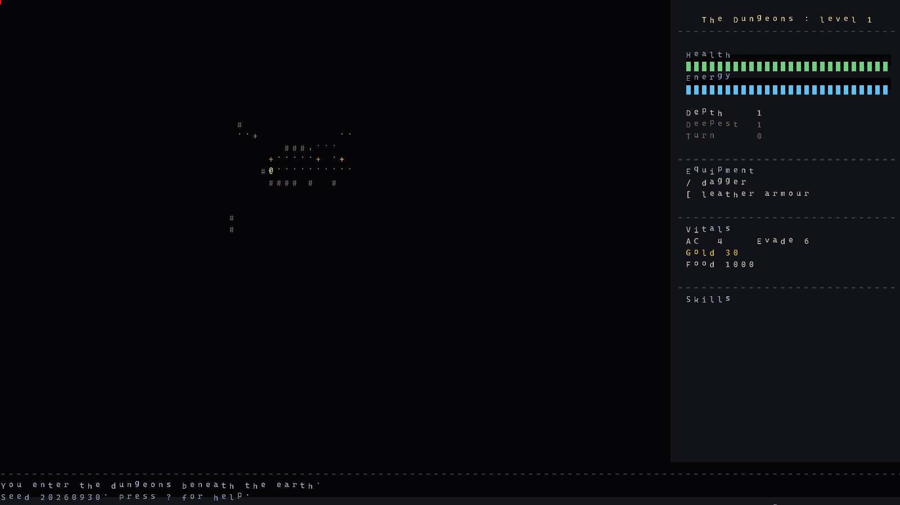
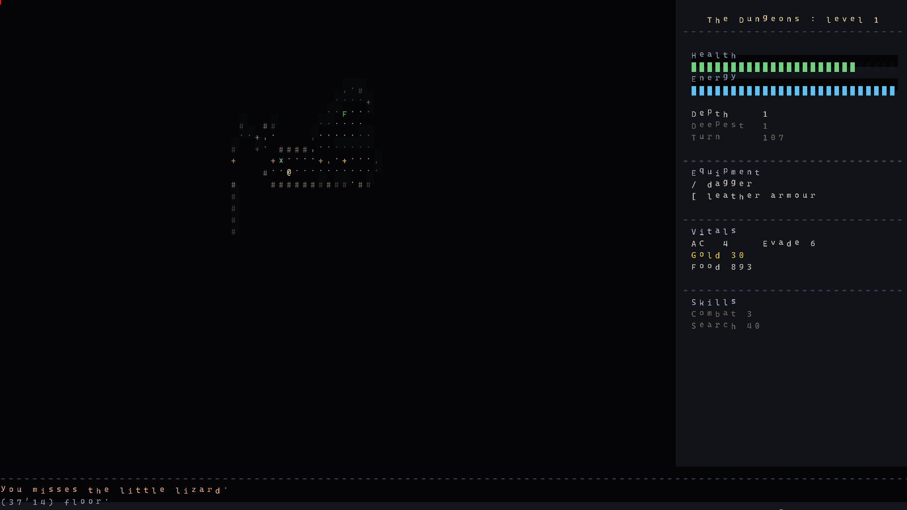
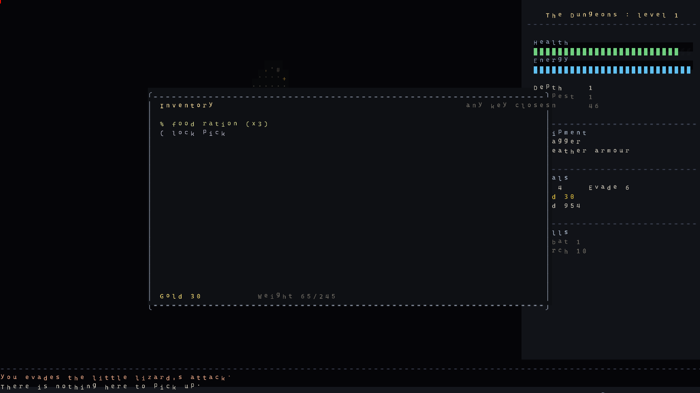
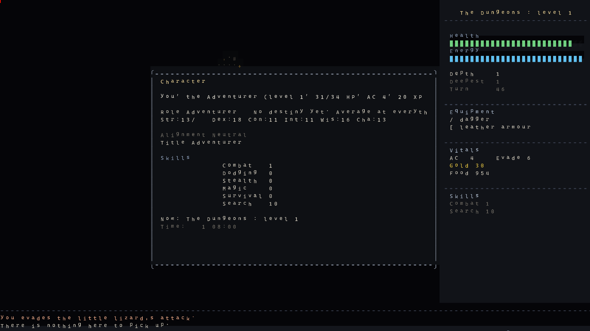
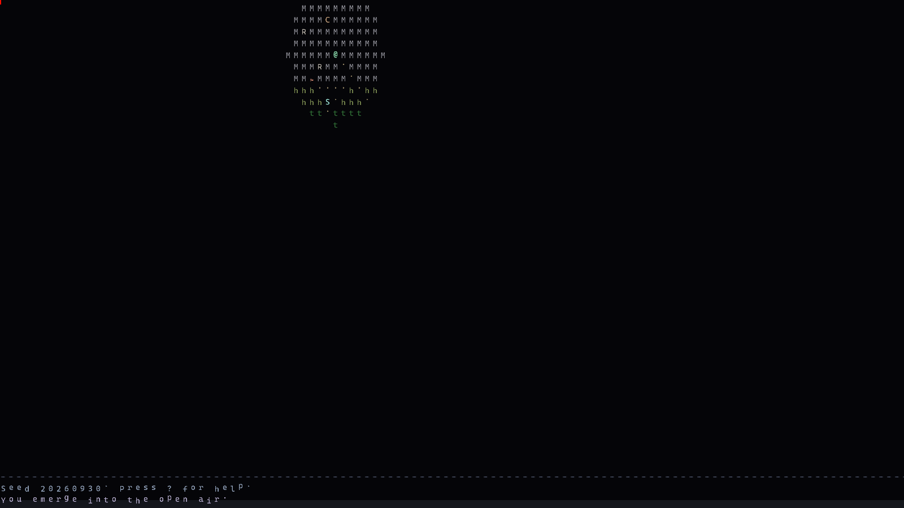

✔ Overworld 96×60 (dia/noite, estradas, encontros) + cidades com 8 lojas e economia
✔ HUD + 10 painéis, mira, viagem, minimap, seed como save
✔ Loja jogável (painel com cursor, Enter/B compra, S vende), papéis + level-ups, objetivo final com vitória
✔ Suite headless 29/29, dumps ASCII, soak 25 seeds — headless.ps1 test
✔AGENTS.md + pasta docs/ com a arquitetura documentada
Fazendo agora
◐ Bug do renderer (tela preta nos captures, sem glifos) — diagnóstico rodando
Próximo (roadmap)
Declarar alpha jogável com screenshot legível
Save em arquivo (hoje só seed), som, balanceamento via soak
Facções/quests do mundo (Qud), mais branches e chefes
Como jogar o alpha
Abra unity/Builds/StandaloneWindows64/Ossuary.exe
hjkl andar · >< escada ·
g pegar · i inventário · ? ajuda · Ctrl-Q 2x sair
Controles completos em docs/controles.md. Morreu = qualquer tecla recomeça.
Screenshots

01 — dungeon

02 — dungeon explorada

03 — inventário

04 — ficha do personagem

05 — overworld
Pipeline
fastcheck.ps1 (segundos, sem lock) ·
headless.ps1 test|dump|soak (lógica, sem Unity) ·
check.ps1 (verdade de compilação) ·
unity-run.ps1 -Method ...BuildWindows64 (build)
Detalhes em AGENTS.md e docs/build-teste.md.